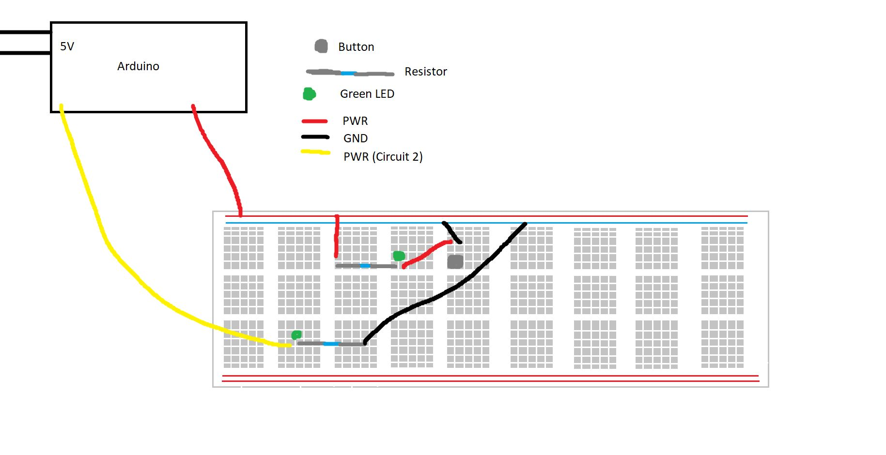
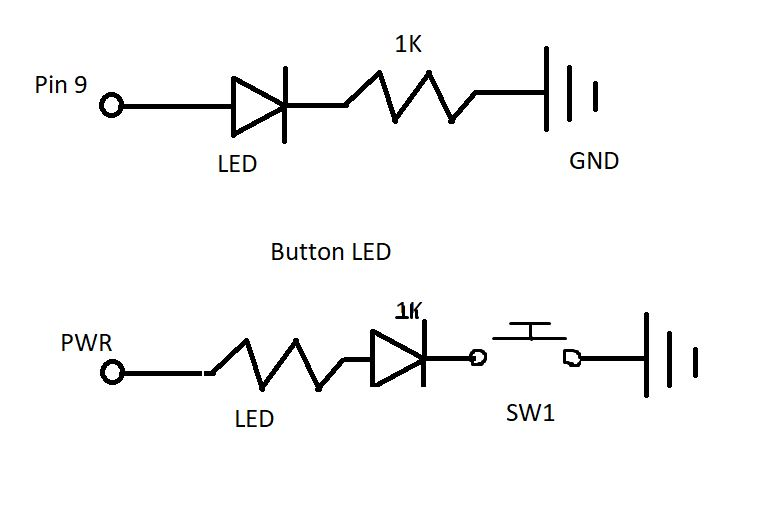
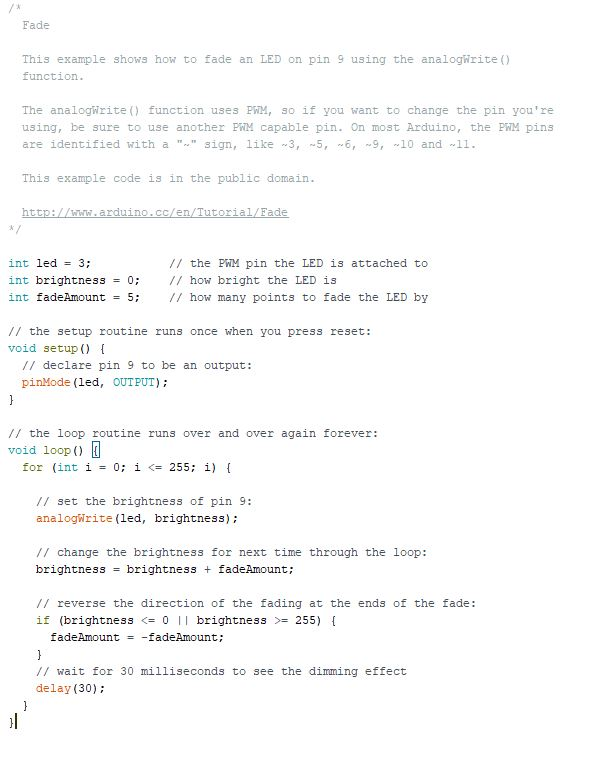

Tristin Donyes' Assignment 2!

Here is all the documentation for assignment 2!
Circuit

This is the circuit that was drawn up in Paint to show what the cable setup was like.
Schematic

This is the schematic of the path of the circuit
*Note* The 'LED' and '1K' tags should be swapped on the second circuit. Forgot to swap them
Code

This is the code for the fade. The button circuit only required the PWR pin since it was direct-connect
I used the example Fade file as the format for the code, but then adjusted it to include the for-loop for the analogue write statement